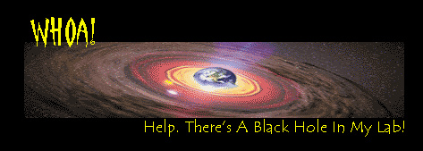
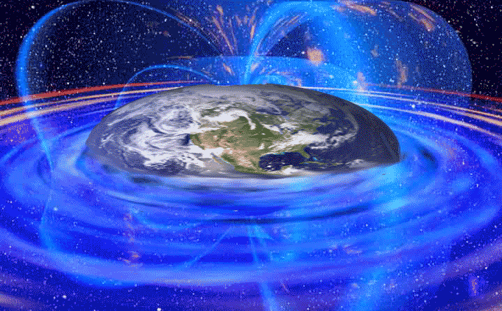
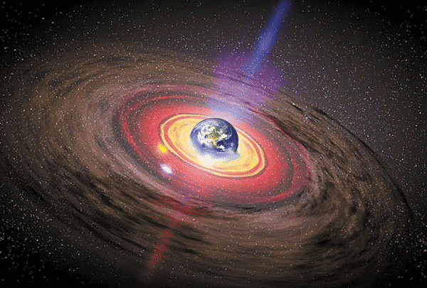

No,
really
-- you just don't want to know this. There’s a remote, but extremely
terrifying
possibility our planet is about to be swallowed from within by a
man-made black hole. In fact, our planet could be booby trapped with baby
black holes already.
It is one weird way to go. One moment, you’re here. And the next -- you’re not. It will be sudden, and dramatic. Within seconds, the planet, with everything and everyone on it, is reduced to nothingness. Or actually: it is squeezed together into a tiny black hole, no more than 9 millimeters wide.
Understandably, on board the International Space Station, this will cause some confusion, to say the very least. Astronauts will be stunned to find that their space ship suddenly no longer orbits a planet -- but, well, nothing much really. The only thing that is out there, is a tiny black spot, invisible to the eye. Still, the speck has the same mass as the Earth. For the time being, the Space Station will remain in orbit, just like the Moon and the satellites. A very silly thing to see, of course.
Perhaps some astronauts will realize what has happened. They might recall how back in the early 21st century, physicists tried to create baby black holes in the lab. And now, many years later... Well, the black holes obviously did show up, after all.
Let's build a hole: The science of DIY black holes
Luckily, the chances of the disaster outlined above really happening should be vanishingly small. But: some risk is there all the same.
|  |
First, you should know that in principle, making a black hole is easy. Basically, the only thing you need to do is to slam two tiny, subatomic particles together in a particle accelerator. If you use enough force, the collision should yield a tiny black hole. (To find out what a black hole is, read our section on black holes from space).
Until recently, most scientists believed creating baby black holes couldn’t be done on our planet. You would need a particle accelerator as big as the solar system, most scientists assumed. But nowadays, that's all changed. Quite a lot of physicists think a much smaller particle accelerator can do the trick, too. Such as the ‘Large Hadron Collider’ (LHC), a particle smasher to be opened in Switserland in 2007.
Luckily, a man-made black hole won’t be a roaring monster that gobbles up planets and stars. Rather, science expects an incredibly tiny baby black hole, much smaller than an atom. What's more, it should evaporate immediately. Black holes give off radiation. And our black hole would be so incredibly small and hot, it would radiate itself away in less than 0,00000000000000000000000001 seconds! That’s why physicists feel pretty confident about working with the LHC. No problem if a black hole shows up. According to the laws of physics, black holes from the lab just shouldn’t be stable.
BUT. There is always a small possibility that the predictions are wrong. Particle accelerators are there to break new ground -- to explore new physics. And the physics science is about to explore, is really new and exotic. Nobody has ever seen a mini black hole. In fact, no one has even the faintest idea how gravity works on very small objects.
So, it’s 2007, and science switches on its LHC. According to some calculations, this super particle accelerator could summon up one black hole every second! There they are: black hole, black hole, black hole; Pop! Pop! Pop! Now suppose that against all expectations, these baby black holes aren’t the fleeting, unstable mini monsters we expect them to be. Suppose they’re stable.
At
first, no one
would notice. They wouldn’t eat up the lab or something. Instead,
they would escape. One by one, the baby black holes would leak away from the
lab, going through concrete walls as if they didn’t exist. If you’re that
small, traveling through solid objects is no problem: you just rarely bump
into a molecule.
And then? Slowly, our refugee black holes would begin to sink towards the
center of the Earth, attracted by gravity. And there, they would sit and
wait.
But sooner or later, a hole will indeed bump into an obstacle. An electron, or an atom’s nucleus -- tiny stuff like that. The black hole will swallow whatever it encounters. This will make it heavier. It will have more gravity, and pull in some more particles. It will get heavier still. And suck in more and more matter.
Eventually, the black holes will merge. They will suck up the Earth’s core, the mantle, and finally -- the entire planet.
Gladly, it could take a baby black hole thousands, if not hundreds of thousands of years to mature. That should give us some time to learn more about them. But the bad news is that even in the distant future, there isn’t much we can do. You cannot find or catch a black hole that is so small you cannot even see it, and that hides deep within the molten iron core of the planet. The only option is to evacuate the planet, if we happen to discover the predictions were wrong.

So, should we leave?
Well, that’s hard to say. As far as we know, everything should be okay. Our world is constantly being bombarded by tiny, high energy particles from outer space. This should also create mini black holes, high up in the atmosphere: up to one hundred each year. And as far as we know, these black holes are indeed unstable. For the last 4,5 billion of years, our planet didn’t die.
On the other hand: in physics, quite often, a totally unexpected, new phenomenon pops up. In recent years, physicists lifted their eyebrows over dark energy, the Pioneer anomaly, the missing of the Higgs boson, the pentaquark and the suspected drift of the fundamental constants. No, we're not going to explain all that -- but the bottom line is this: physicists are constantly being surprised by weird new stuff that wasn't in the theories yet.
Now, you don't want to be such a surprise to be a black hole that has our planet for breakfast!
And then there’s this. In march 2005, scientists working on the Relativistic Heavy Ion Collider in Upton, New York created a fireball that indeed looked awfully much much like a black hole.
It was unstable. In fact, it wasn't even a real black hole. Or so the scientists involved say. Perhaps the first man-made black hole is on its way to the center of the planet already!


LINKS OUT:
"Black hole-like phenomenon created by collider". In: New Scientist, 19 March 2005
Valerie Jamieson: "Black holes, but not as we know them". In: New Scientist, 22 January 2005
John G. Kramer: "CERN’s LHC: A black hole factory?"
PAPER LINKS:
Ernst van Eijk: "Zwarte
gaten uit het lab". In: Natuurwetenschap en Techniek, Maart 2005
Bernard J. Carr and Steven B. Giddings: "Quantum black holes". In: Scientific American, May 2005